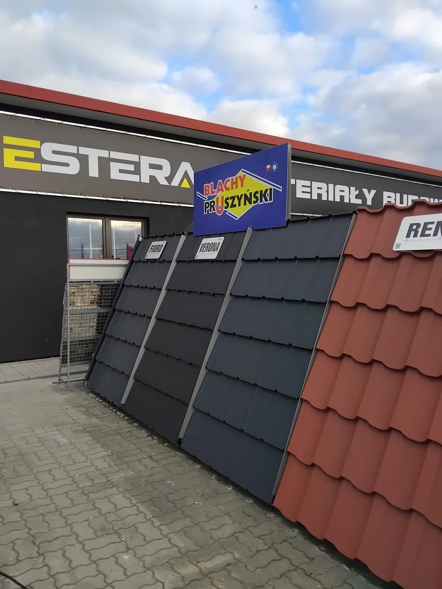
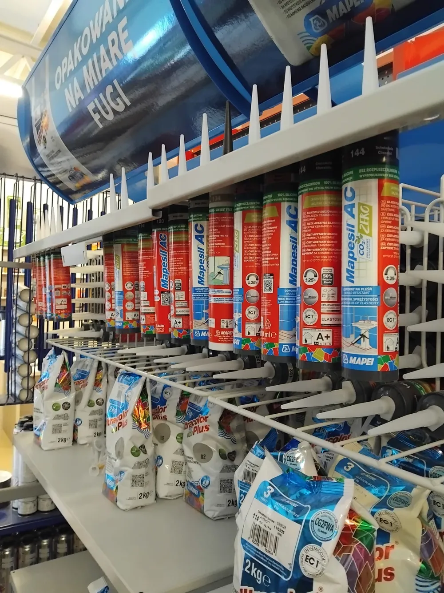
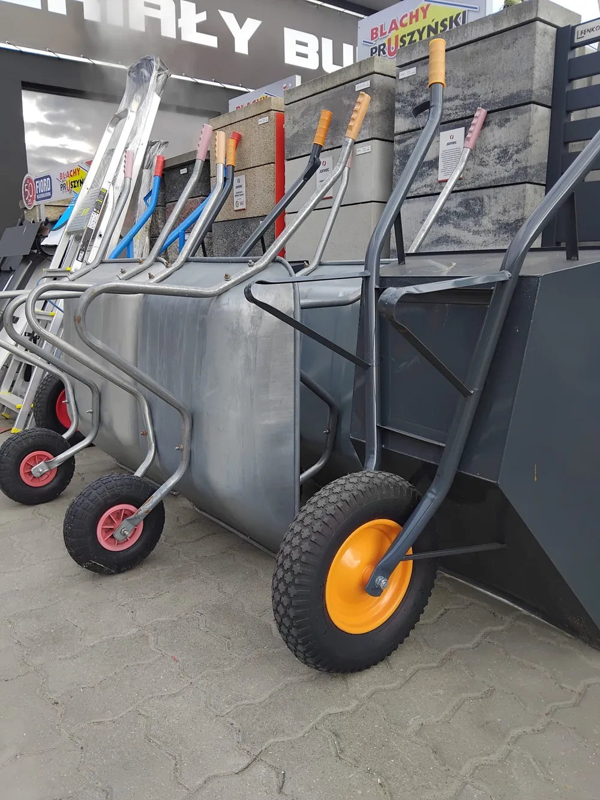
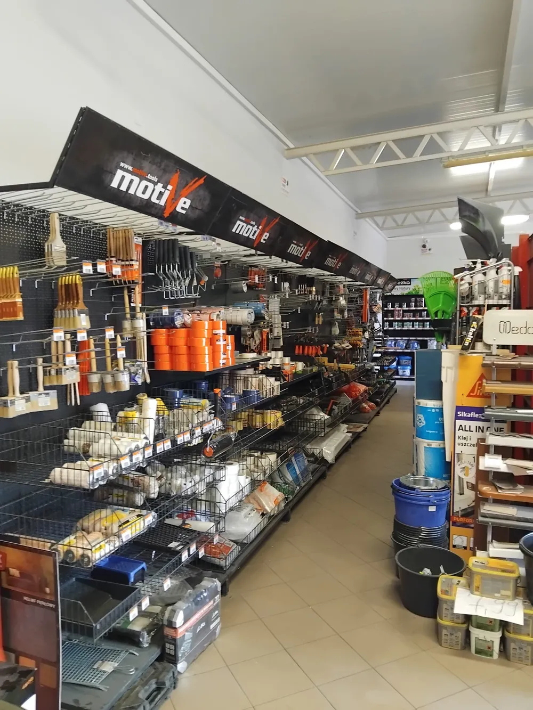

● TWÓJ SKŁAD BUDOWLANY W ZBICZNIE
Dobry początek
każdej budowy.
Od fundamentów po ostatni detal. Materiały, fachowe doradztwo i transport — w jednym miejscu.
firmy BUD-DOMTransport materiałów
z rozładunkiem HDS

ESTERA / BUD-DOMTwoja budowa.
Nasze doświadczenie.
JEDNO MIEJSCE. WIELE MOŻLIWOŚCI.
Buduj po swojemu.
Resztę ustalmy razem.

Materiały na każdy etap.
Materiały konstrukcyjne, izolacje, dachy i wykończenie. Sprawdź kategorie, wybierz potrzebne produkty i zbierz je w jednym zapytaniu o wycenę.
Poznaj szczegóły
Wsparcie do dużych zadań.
Ładowarki teleskopowe, minikoparki, wywrotki i transport HDS. Poznaj sprzęt BUD-DOM i zapytaj o wsparcie przy pracach ziemnych, podnoszeniu lub montażu.
Poznaj szczegóły
Partner na kolejne budowy.
Stałe zaopatrzenie dla wykonawców i firm budowlanych. Ustalamy indywidualne rabaty, terminy płatności oraz szczegóły dostaw na kolejne inwestycje.
Poznaj szczegółyZnamy materiały.
Bo sami z nich budujemy.
Łączymy doświadczenie firmy BUD-DOM, działającej od 1993 roku, z lokalną obsługą hurtowni ESTERA w Zbicznie. Jako wykonawca znamy materiały z codziennej pracy: pomagamy porównać możliwości, dobrać odpowiednie produkty i zorganizować dostawę.
Poznaj nas bliżejBĄDŹ NA BIEŻĄCO Z ESTERĄ
Zajrzyj też na Facebooka.
Sprawdzaj nasze publikacje, zdjęcia produktów i aktualności z hurtowni. Obserwuj profil, aby łatwiej wracać do nowych informacji.
JESTEŚMY BLISKO TWOJEJ BUDOWY
Porozmawiajmy.
Albo zajrzyj do nas.
Zapytaj o materiały, transport lub sprzęt z operatorem.
Pomożemy dobrać rozwiązanie do Twojej inwestycji.
ESTERA BUD-DOM
Szosa Brodnicka 36
87-305 Zbiczno
56 494 54 72 info@bud-dom.com - Poniedziałek–piątek
- 7:00–17:00
- Sobota
- 8:00–13:00
- Niedziela
- Zamknięte